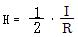
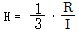
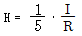
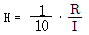
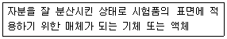
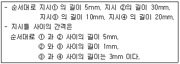

자기비파괴검사기능사 (2007-01-28 기출문제)
1과목: 자기탐상시험법
1. 자외선조사장치에 대한 설명으로 틀린 것은?
- 자외선의 강도 측정은 조도계로 측정한다.
- 자외선조사장치는 광원이 안정된 후 측정한다.
- 자외선조사장치에서 나오는 자외선의 파장은 320~400㎚의 영역으로서 근자외선이다.
- 자외선조사장치는 일반적으로 고압 수은등에 필터가 부착된 조사등과 안정기로 구성되어 있다.
(정답률: 38%)

2. 직경 5㎝, 길이 30㎝ 인 강봉을 원형 자화법으로 자분탐상시험시 요구되는 자화전류 값으로 가장 적당한 것은?
- 약 600A
- 약 1000A
- 약 1600A
- 약 2600A
(정답률: 34%)
3. 자분탐상시험에서 원통형 코일의 단면적과 검사부위 단면적의 비를 무엇이라 하는가?
- 비투자율(relative permeability)
- 자기 유도율(magnetic induction ratio)
- 전도율(conductivity)
- 충전율(fill factor)
(정답률: 30%)
4. 비파괴검사에 대한 설명으로 다음 중 옳지 않은 것은?
- 시험체의 수명 평가에 기초 자료가 된다.
- 초음파탐상검사는 내부, 침투탐상검사는 표면결함 검출에 주로 이용된다.
- 사용상 영향을 주지 않고 시험체를 검사하는 방법이다.
- 시험체에 대한 모든정보를 가장 정확히 알 수 있는 방법이다
(정답률: 35%)
5. 대부분의 와전류탐상시험에서 최소허용신호 대 잡음 비율로 옳은 것은?
- 1 : 1
- 2 : 1
- 3 : 1
- 4 : 1
(정답률: 53%)
6. 국부적인 잔류자기에 의하여 만들어진 비관련성 지시는 자분탐상 시험을 방해한다. 효과적인 검사를 수행하기 위하여 어떻게 하는 것이 가장 바람직한가?
- 탈자 후 요구되는 방향으로 재자화 한다.
- 보다 높은 전류를 사용한다.
- 보다 낮은 전류를 사용한다.
- 다른 방향으로 자화한다.
(정답률: 23%)
7. 자분탐상검사 후 다음 중 탈자를 하지 않아도 되는 경우는?
- 자계 측정 계기의 부품을 검사한 경우
- 기어를 열처리 후 잔류법으로 검사한 경우
- 보자력이 큰 부품을 검사 후 전기 아크용접을 하는 경우
- 기어의 축을 잔류법으로 검사하고 열처리 후 사용 하는 경우
(정답률: 20%)
8. 형광자분탐상시험에 자외선 조사 등을 사용하는 이유는?
- 검사자의 눈을 보호하기 위하여
- 자기장을 육안으로 식별이 가능하도록 하기 위하여
- 자기의 강도를 더 높이기 위하여
- 자분 지시를 더 선명하게 보기 위하여
(정답률: 78%)
9. 길이가 10인치, 직경이 2인치 인 강봉을 선형자화법으로 검사할 때의 소요 전류는 몇 A 인가? (단, 코일의 권선수는 4회이다.)
- 875
- 1000
- 1250
- 2250
(정답률: 23%)
10. 프로드(Prod)법 이란?
- 코일 안에서 시험부를 자화하는 방법
- 영구자석을 사용하여 자화시키는 방법
- 시험부 구멍 등에 도체를 관통시켜 전류를 흘리는 방법
- 2개의 전극을 통해 시험부의 특정부위에 전류를 흘려 검사하는 방법
(정답률: 69%)
11. 다음 중 자분지시모양의 기록 중에서 정확도와 신뢰성이 가장 좋은 것은?
- 전사
- 스케치
- 사진촬영
- 셀로판 테이프에 부착
(정답률: 62%)
12. 와전류탐상시험은 다음 중 무엇을 응용한 것인가?
- 자기누설 (magnetic leakage)
- 전자기 유도(electromagnetic induction)
- 자기저항(magnetic resistance)
- 잔류자장(residual magnetism)
(정답률: 25%)
13. 자분탐상시험에서 축통전법으로 자화하고자 할 때 자화전류량은 주로 무엇에 의하여 결정되는가?
- 시험품의 재질
- 시험품의 직경
- 시험품의 모양
- 시험품의 길이
(정답률: 5%)
14. 자분탐상시험 중 발생될 수 있는 재해로부터의 안전재해 예방법으로 적절하지 않은 것은?
- 휘발성 용제 등에 자분을 현탁시킨 검사액을 사용할 경우에는 부근에 화기가 없는지 등의 예방조치를 하여야 한다.
- 인화성 가스가 있는 장소에서는 아크 발생 등의 우려를 예방하기 위하여 검사를 수행해서는 안 된다.
- 독성이 없는 건식자분이 환경에 노출될 경우 장시간이라도 특별히 방진마스크를 사용할 필요는 없다.
- 전 처리 등에 사용한 기름이 묻은 물건들은 화재예방을 위해서 적당한 용기에 처리해 두어야 한다.
(정답률: 18%)
15. 습식자분의 분산매질로 물을 사용할 때 젖음성(또는 적심성)을 좋게 하기 위하여 첨가하는 것은?
- 방청제
- 백등유
- 용제
- 계면활성제
(정답률: 23%)
16. 강자성체인 미세한 철분이 함유된 검사액을 사용하여 자분탐상 시험을 수행하는 방법은?
- 건식법
- 습식법
- 연속법
- 잔류법
(정답률: 23%)
17. 다음 중 시험품에 존재하는 결함에 의해서 나타난 자분 모양은?
- 자기 펜 흔적
- 시험품의 심한 경도 차이
- 구조물의 심한 두께 차이의 경계면
- 라미네이션에 의한 지시
(정답률: 10%)
18. 자분탐상시험과 관련한 용어와 그 단위의 연결이 틀린 것은?
- 자속 - ㏝ (Weber)
- 자외선의 파장 - ㎚ [또는 Å]
- 자속밀도 - T (Tesla)
- 투자율 - Oe ( Oersted )
(정답률: 56%)
19. 자속(magnetic flux)에 대한 설명으로 옳은 것은?
- 자화된 물체에 자력이 미치는 공간
- 자기회로 내의 자력선의 총 수
- 자기를 띤 물체가 쇠붙이 등을 끌어 당기는 성질
- 서로 끌어 당기거나 밀어내는 자석의 힘
(정답률: 29%)
20. 지구의 남북 방향을 지시하는 것으로, 자침이라고도 부르며 누설자기의 발생부에 놓으면 자침이 움직여 자기의 존재를 알 수 있는 자기 계측기는 무엇인가?
- 가우스 메타 (Gauss meter)
- 자속계 (Flux meter)
- 간이형 자기 검출기 (Field indicator)
- 자기 컴파스 (Compass indicator)
(정답률: 60%)
2과목: 자기탐상관련규격
21. 자분탐상시험에서 자분을 선택할 때 고려할 대상이 아닌 것은?
- 자분의 무게
- 시험체의 표면상황
- 탐상장치
- 입도 및 분산성
(정답률: 23%)
22. 자분탐상시험에 사용되는 자외선 등의 필터(filter)는 깨진 것을 사용하면 안 되는 주된 이유로 타당한 것은?
- 작업자의 눈에 실명할 정도의 손상을 입힐 우려가 있기 때문이다.
- 과도한 자외선 방출로 작업자가 방사선을 피복 받아 유전적인 피해가 우려되기 때문이다.
- 시험체 표면에서 자외선의 강도가 너무 강하여 결함검출을 전혀 할 수 없기 때문이다.
- 작업자의 피부 손상 등을 방지하기 위해서이다.
(정답률: 7%)
23. 축통전법에 의한 자분 탐상시험시 자계의세기[Oe]를 구하는 식으로 옳은 것은?(단, I : 전류(A), R : 도체의 반경(㎝) H : 자계의 세기(Oe)




(정답률: 17%)
24. 자분탐상시험에서 시험체 표면하의 결함검출에 다음 중 가장 우수한 자화 전류는?
- 교류
- 직류
- 반파정류
- 충격전류
(정답률: 37%)
25. 다음 중 자분탐상검사의 장점이 아닌 것은?
- 침투탐상검사법에 비해 표면 및 표면직하의 검사에 효과적이다.
- 초음파탐상검사법에 비해 검사자가 쉽게 검사방법을 배울 수 있다.
- 방사선투과검사보다 결함의 종류와 위치를 더 명확하게 알 수 있다.
- 방사선투과검사법에 비해 비교적 작업비가 저렴하다.
(정답률: 15%)
26. 철강재료의 자분탐상 시험방법 및 자분모양의 분류 (KS D 0213)에 따른 용어의 정의 중 다음 문장이 뜻하는 것은?

- 용매
- 계면활성제
- 분산매
- 점착성 유체
(정답률: 22%)
27. 철강재료의 자분탐상 시험방법 및 자분모양의 분류(KS D 0213)에 의해 자분탐상시험시 자화할 때의 고려할 사향을 설명한 것 으로 올바른 것은?
- 자계의 방향을 예측되는 흠의 방향에 대하여 가능한 한 수평으로 한다.
- 자계의 방향은 시험할 면과 가능한 한 수직이 되게 한다.
- 시험면을 태워서는 안될 경우 시험체에 직접 통전하지 않는 자화방법을 선택하는 것이 좋다.
- 반자계를 크게 한다.
(정답률: 15%)
28. 철강재료의 자분탐상 시험방법 및 자분모양의 분류(KS D 0213)에서 탐상 후 탈자는 필요에 따라 확인이 필요한데 다음 중 탈자 확인에 필요한 장치로 적합한 것은?
- 자분살포기
- 블랙라이트
- 가우스미터
- 데시케이터
(정답률: 67%)
29. 철강재료의 자분탐상 시험방법 및 자분모양의 분류(KS D 0213)에 의해 일반적인 퀜칭한 부품을 잔류법으로 탐상시험할 때 필요한 자계의 강도[A/m]는 얼마로 규정하고 있는가?
- 500 ~ 1000
- 1200 ~ 2000
- 2400 ~ 3600
- 6400 ~ 8000
(정답률: 20%)
30. 철강재료의 자분탐상 시험방법 및 자분모양이 분류(KS D 0213)에는 자분의 자성을 측정하는 방법이 열거되어 있다. 이 방법에 해당되지 않는 것은?
- 자기천칭을 사용하는 방법
- 커패시턴스로 저항을 구하는 방법
- 자기히스테리시스 곡선을 구하는 방법
- 솔레노이드 코일을 사용하는 방법
(정답률: 24%)
31. 강재 석유저장탱크의 구조(KS B 6225)에 따라 용접부에 대한 자분탐상시험을 실시할 때의 설명으로 옳은 것은?
- 검사 재료는 원칙적으로 건식 비형광자분을 사용 한다.
- 장치로는 직류 프로드 자화장치를 사용한다.
- 자화 방법을 교류 극간법으로 한다.
- 특별한 경우를 제외하고는 자분의 적용은 건식법으로 한다.
(정답률: 24%)
32. 철강 재료의 자분탐상 시험방법 및 자분모양의 분류(KS D0213)에서 시험체의 축방향으로 전류를 직접 흐르게 하여 시험체를 자화하는 시험방법을 무엇이라 하는가?
- 축통전법
- 직각통전법
- 전류관통법
- 극간법
(정답률: 12%)
33. 철강재료의 자분탐상 시험방법 및 자분모양의 분류(KS D0213)에서 시험기록의 기호 표시 중 “C∧ 3000”이 있다. 여기서 “∧"의 의미는?
- 충격전류
- 교류전류
- 직류전류
- 맥류전류
(정답률: 27%)
34. 철강 재료의 자분탐상 시험방법 및 자분모양의 분류(KS D0213)에서 자외선조사장치의 점검시 자외선 강도계를 사용하여 측정한 자외선 강도값은 필터 면 과 몇㎝ 떨어진 위치에서 800㎼/cm2미만인 경우에 수리 또는 폐기하도록 규정하고 있는가?
- 10㎝
- 25㎝
- 30㎝
- 38㎝
(정답률: 71%)
35. 항공우주용 자기탐상 검사방법 (KS W4041)에 의해 비형광자분법 을 사용할 때 조명 장치로는 백색 등을 검사 영역에 설치하여야 한다. 적절한 검사를 수행하기 위하여 적어도 몇 ㏓ 이상의 백색등이 필요한가?
- 200
- 500
- 1250
- 2150
(정답률: 58%)
36. 철강 재료의 자분탐상 시험방법 및 자분모양의 분류(KS D0213)에서 표준시험편의 표시가 “A1-15/100" 일 때 15/100에 대한 설명으로 맞는 것은?
- 사선의 오른쪽이 판의 두께, 사선의 왼쪽이 인공 홈의 깊이를 나타내는 수치이다.
- 사선의 오른쪽이 인공 흠의 깊이, 사선의 왼쪽이 판의 두께를 나타내는 수치이다.
- 수치의 단위는 ㎜ 이다.
- 수치의 단위는 ㎝ 이다.
(정답률: 12%)
37. 철강 재료의 자분탐상 시험방법 및 자분모양의 분류(KS D0213)에 의한 형광자분탐상시험시 자외선 조사장치의 파장은 얼마 정도이어야 하는가?
- 120 ~ 200㎚
- 200 ~ 280㎚
- 2800 ~ 3200Å
- 3200 ~ 4000Å
(정답률: 5%)
38. 철강 재료의 자분탐상 시험방법 및 자분모양의 분류(KS D0213)에 규정한 자화방법과 그부호의 표시가 서로 맞게 연결된 것은?
- 프로드법 : M
- 자속관통법 : I
- 극간법 : Y
- 전류관통법 : ER
(정답률: 39%)
39. 거의 일직선상에 4개의 길이가 서로 다른 선상의 자분모양이 다음과 같이 검출되었다. 철강 재료의 자분탐상시험방법 및 자분모양의 분류(KS D0213)에 의해 바르게 분류한 것은?

- 지시②,③,④는 연속한 자분모양으로 그 길이는 60mm 이다.
- 지시①과 ④는 독립된 자분모양이고, 결함 ②와 ③은 연속한 자분모양으로 그 길이는 40mm 이다.
- 지시②,③,④는 연속한 자분모양으로 그 길이는 64mm 이다.
- 지시①과 ④는 독립된 자분모양이고, 지시②와 ③은 연속한 자분모양으로 그 길이는 41mm이다.
(정답률: 17%)
40. 항공우주용 자기탐상 검사방법(KS W4041)에는 검사결과를 기록하도록 규정하고 있다. 특별히 지정하지 않는 한 기록은 몇 년간 보존하도록 규정하고 있는가?
- 1년
- 2년
- 3년
- 5년
(정답률: 35%)
3과목: 금속재료일반 및 용접일반
41. 새로운 전자메일이 왔을 경우에 조회할 수 있는 기능을 가진 프로토콜로서, 메일 서버 컴퓨터에 설치되어 있는 윈도우즈용 메일 프로그램을 이용해 메일을 주고받을 때 사용하는 프로토콜은?
- TCP/IP
- SMTP
- IMAP
- POP
(정답률: 25%)
42. 내부 네트워크에 대한 외부로부터의 불법적인 접근을 방어 보호하는 장치로 외부의 접근을 체계적으로 차단하는 것을 무엇이라 하는가?
- 해킹
- 펌웨어
- 스토킹
- 방화벽
(정답률: 67%)
43. 한 대의 컴퓨터에서 동시에 여러 작업을 수행하는 것은?
- 로그인 (Log-in)
- 멀티미디어 (Multimedia)
- 멀티태스킹 (Multi-tasking)
- 플러그 앤 플레이 (Plug and Play)
(정답률: 46%)
44. 우리 정부의 “교육인적자원부” 인터넷 주소로 맞는 것은?
- http://www.moe.go.kr
- http://www.moe.co.kr
- http://www.moe.ac.kr
- http://www.mod.re.kr
(정답률: 35%)
45. 인터넷에서 특정한 웹 사이트에 접속했던 기록을 보관하고 있는 것은?
- CGI
- Cookie
- GPS
- Ping
(정답률: 64%)
46. 냉간 가공한 금속재료를 가열하여 풀림 하였을 때 냉간가공으로 인하여 일어난 결정입자의 내부 변형이 없어지는 과정은?
- 재결정
- 회복
- 결정립성장
- 2차 재결정
(정답률: 18%)
47. 다음 중 산화가 가장 빨리 일어나는 금속은?
- Cu
- Fe
- Ni
- Al
(정답률: 30%)
48. 물과 얼음, 수증기가 평형을 이루는 3 중점 상태에서의 자유도는?
- 0
- 1
- 2
- 3
(정답률: 19%)
49. 다음 중 황동의 주성분으로 옳은 것은?
- Cu - Sn
- Sn - Ni
- Cu - Zn
- Zn - Sn
(정답률: 43%)
50. 다음 중 금속의 일반적인 특성이 아닌 것은?
- 전성 및 연성이 나쁘다.
- 전기 및 열의 양도체이다.
- 금속 고유의 광택을 가진다.
- 수은을 제외한 고체 상태에서 결정구조를 가진다.
(정답률: 16%)
51. 알루미늄 합금의 질별 기호 중 T4의 설명으로 옳은 것은?
- 담금질 후 냉간 가공한 것
- 담금질 후 인공시효 시킨 것
- 담금질 후 상온시효 시킨 것
- 담금질 후 안정화 처리한 것
(정답률: 31%)
52. 상온에서 체심입방격자에 해당되는 금속은?
- Zn
- Pt
- Ag
- Mo
(정답률: 24%)
53. Al 의 표면을 적당한 전해액 중에서 양극 산화 처리하여 방식성이 우수하고 치밀한 산화 피막을 만드는 방법이 아닌 것은?
- 수산법
- 황산법
- 질산법
- 크롬산법
(정답률: 22%)
54. 다음 중 Ni 합금이 아닌 것은?
- 슈퍼인바
- 문쯔메탈
- 엘린바
- 플래티나이트
(정답률: 5%)
55. 주철의 일반적인 특징을 설명한 것 중 틀린 것은?
- 절삭성이 좋은 편이다.
- 진동의 감쇠능이 우수하다.
- 유동성이 좋아 주조가 잘 된다.
- 충격에 잘 견디어 깨지지 않는다.
(정답률: 47%)
56. 섬유강화금속 복합재료의 표기로 옳은 것은?
- FRM
- CVD
- PVD
- NKS
(정답률: 15%)
57. 다음 중 경도시험기가 아닌 것은?
- 만능시험기
- 브리넬시험기
- 로크웰시험기
- 비커스시험기
(정답률: 11%)
58. 피복 아크 용접봉의 피복제 역할 설명 중 잘못된 것은?
- 전기 전도를 양호하게 한다.
- 파형이 고운 비드를 만든다.
- 급냉을 방지한다.
- 스패터를 적게 한다.
(정답률: 10%)
59. 다음 중 전기저항 용접이 아닌 것은?
- 스폿 용접
- 서브머지드 용접
- 심 용접
- 프로젝션 용접
(정답률: 40%)
60. 용접조건 중 용입 불량의 원인이 아닌 것은?
- 루트 간격이 넓을 때
- 용접 홈 각도가 좁을 때
- 용접속도가 너무 빠를 때
- 용접 전류가 낮을 때
(정답률: 41%)